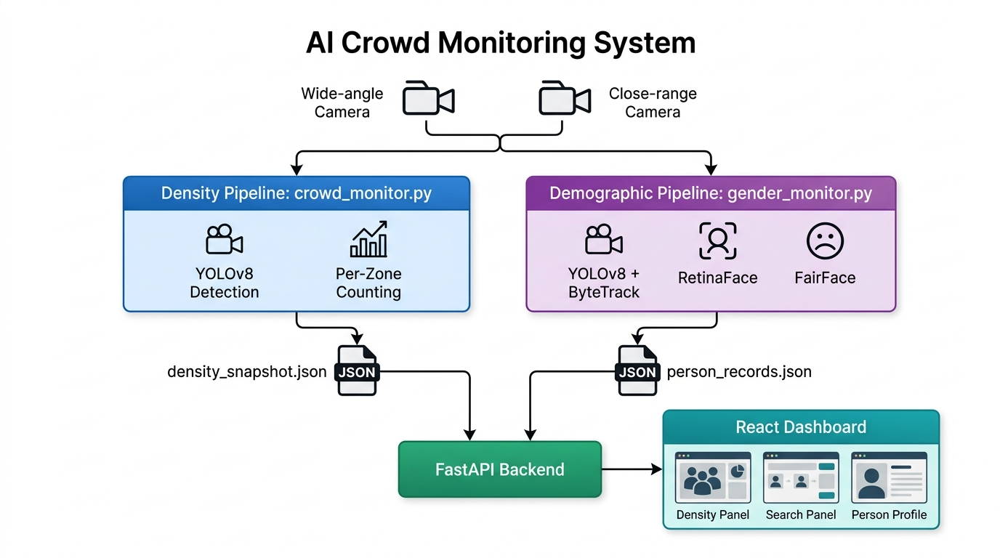
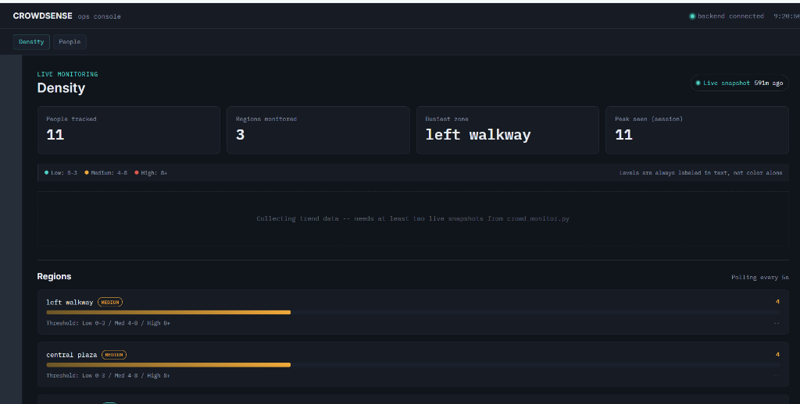
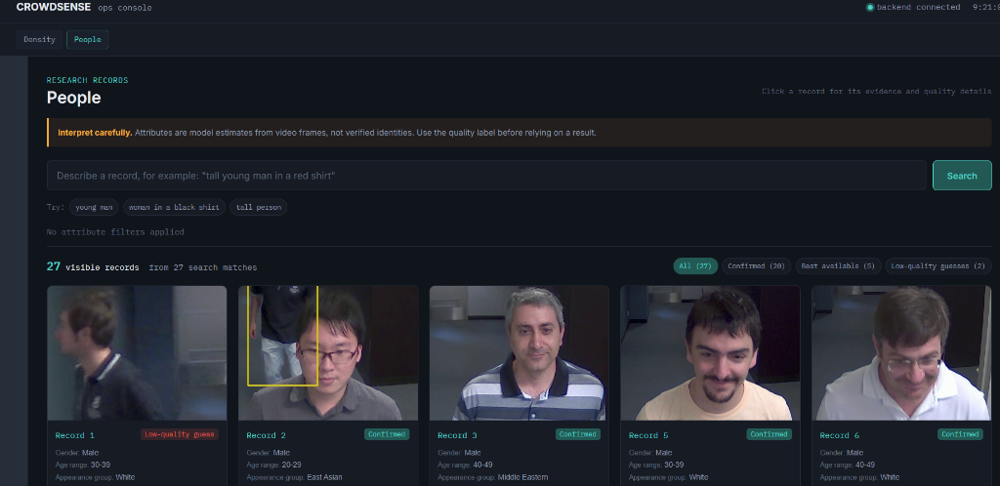
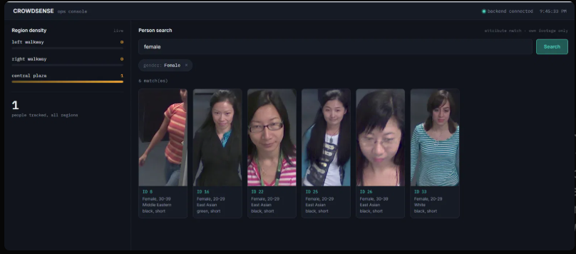

Presentation & Demo
Real-time processing via YOLOv8, FairFace, and FastAPI.

Track crowd thresholds across multiple predefined regions dynamically.

Filter records using natural language and demographic tags.

Integrated operational console for real-time situational awareness.

Highly scalable, edge-compatible computer vision pipeline.